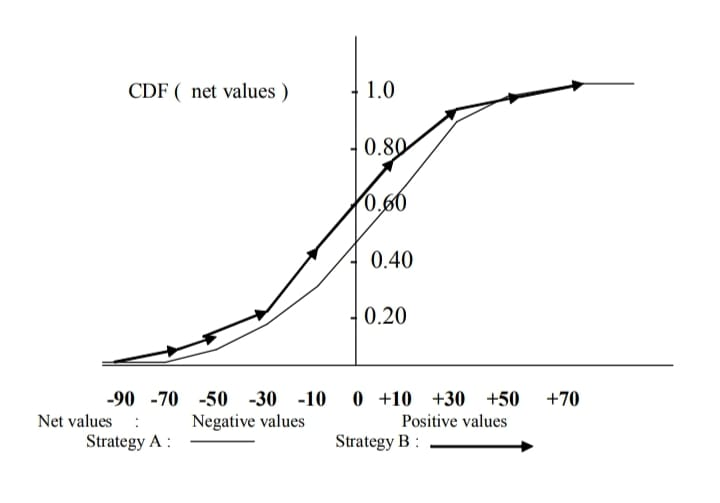

“Probability or stochastic process” is a name used to designate mathematical models that represent the behavior of phenomena described by probability theory, ranging from a simple game of coin tossing up to more complex phenomenon like “Brownian motion theory”, “investment analysis”, etc. Stochastic process uses mathematical models to represent phenomena ruled by the probabilistic variation of some variable over time.
Simulation methods, also known as Monte Carlo methods, are stochastic processes that use mathematical models that have similar behavior of real problems, feeding these models with random values generated according to some probability distribution. The term Monte Carlo is used as a synonym for simulation since in some problems the generation of probabilistic values was historically linked to the use of the roulette wheel.
In this chapter we show how simulation method can be used to evaluate complex decision problems involving uncertainty. This kind of problem involves
knowledge of probability distribution (such as uniform, Poisson, or Normal distribution) used to represent the probabilistic process and the value of respective parameters (such as the average value and the standard deviation). Simulation is the most appropriate tool for visualizing, testing, and evaluating the parameters and the dynamic behavior of a probabilistic process. Simulation uses algorithms that generate a population of probabilistic events which makes possible the estimation of the values of parameters of the problem. The results of a simulation can be proven to be valid approximations of the values of the real phenomenon which they simulate.
In previous chapters, several aspects of decision problems, involving the choice
of the best alternative, uncertainties, multiple scenarios, multiple goals, etc.,
have been studied. However those were cases of decision for only one stage.
Many complex strategic-decision problems are formed by a dynamic sequence
of decision problems involving multiple stages of decisions. These problems are
more appropriately represented using a decision tree, and simulation is used
to make comparisons of different strategies along the decision tree.
Let us consider the following two-stage strategies:
Stage one: Invest in a high-risk stock whose payoff (Payoff-A) can be negative or positive values. Past data show that the payoff value varies from - $100 (maximum loss) to +$100 (maximum profit);
a. if Payoff-A is a positive value less than $50, then the investor must pay $30 as expenses, or if Payoff-A is a positive value greater than $50, then the investor must pay $50 as expenses;
b. if Payoff-A is a negative value between $0 and (-$50), then the investor must pay $20 as expenses, or if Payoff-A is a negative value less than (- $50), then the investor pays $0 as expenses.
Stage one: Invest in a high-risk stock whose payoff (Payoff-B) can be negative or positive values. Past data show that the payoff value varies from -$120 (maximum loss) to +$120 (maximum profit);
a. if Payoff-B is a positive value less than $60, then the investor must pay $30 as expenses, or if Payoff-B is a positive value greater than $60, then the investor must pay $50 as expenses;
b. if Payoff-B is a negative value between $0 and (-$60), then the investor must pay $20 as expenses, or if Payoff-B is a negative value less than (-$60), then the investor pays $0 as expenses.
In this simple project, the selection of strategy A or B depends on the results of the following events:
a. “Payoff-A” and “Payoff-B”, with two possible results: positive or negative values;
b. “positive value of Payoff A or B” results in two possible values for expenses;
c. “negative value of Payoff A or B” also results in two possible expenses; which provide 2·2·2 = 8 possible results.
The analysis of a probabilistic decision problem to a broader band of variation of the parameter values is made by a simulation study, using probability distribution attributed to each value of the estimated parameter.
The estimated value of a parameter is used as the mean or average value of the distribution. Asking an expert, it is possible to define an “upper limit” for this average, such that only 5% of the possible values of this parameter surpass this upper limit. In a similar fashion, it is possible to define a “lower limit” such that only 5% of the possible values will be lower than this limit. In probability terms, this procedure corresponds to defining a confidence interval for the average value with 90% confidence.
If the decision maker and the expert agree that the average value provided by the estimate is located in a symmetric position with relation to these two limits, the normal distribution can be used. If not, one can evaluate the possibility of using other type of distributions such as the exponential, log-normal, beta, gamma distribution, etc.
In our case, we are assuming that the value of the Payoffs (negative or positive values) has a normal distribution with the average equal to the value estimated by the expert and the standard deviation equals to 25% of the difference between this average and one of the limits found. In the case of normal distribution an interval defined by the expression m ± 4s (the average value plus and minus four times the standard deviation) corresponds to approximately 90% of the possibilities of occurrence of the values of this distribution.
Using these distributions the first stage of strategy A and B becomes:
Stage one: Invest in a high-risk stock whose payoff (Payoff-A) is distributed
according:
To N (= $0, = $25), a Normal distribution with average value and standard deviation equal to $0 and $25, respectively; and
Stage one: Invest in a high-risk stock whose payoff (Payoff-B) is distributed
according:
To N (= $0, = $30), a Normal distribution with average value and standard deviation equal to $0 and $30, respectively.
We are admitting that events in stage two do not involve probability distribution. Payoff’s normal distribution functions and decision trees for strategies A and B are as shown in Figure 11.1.
The simulation process to generate the Net values (Payoff minus expenses) for both strategies A and B is the following:
Figure 11.1. Payoff-A and Payoff-B probability distributions and the
decision tree
• generate a normally distributed random value (using an algorithm or appropriate software for simulation);
• using this random value make appropriate calculation of stage two to have the final net value (positive or negative) for the strategy A or B.
For example, if the Payoff-A value generated is $76, the expenditure will be $50 and then the net value is $26; if Payoff-B value is -$67, the expenditure is zero and the final net value is -$67, and so on.
Table 11.1 presents results of 30 simulated events (net values) for strategy A and 30 events for B. The first column of this table shows intervals for the net
Table 11.1. Frequency, probability, and cumulative distribution function values of net values for strategy A and B
| Net values$ | Frequency of A | P(A) | CDF(A) | Frequency of B | P(B) | CDF(B) |
|---|---|---|---|---|---|---|
| -70 | 1 | 0.033 | 0.033 | 2 | 0.067 | 0.067 |
| -70~-50 | 2 | 0.067 | 0.100 | 3 | 0.100 | 0.167 |
| -50~-30 | 3 | 0.100 | 0.200 | 3 | 0.100 | 0.267 |
| -30~-10 | 5 | 0.167 | 0.367 | 5 | 0.167 | 0.434 |
| -10~+10 | 8 | 0.267 | 0.634 | 9 | 0.300 | 0.734 |
| +10~+30 | 7 | 0.233 | 0.867 | 5 | 0.167 | 0.901 |
| +30~+50 | 3 | 0.100 | 0.967 | 2 | 0.066 | 0.967 |
| more than +50 | 1 | 0.033 | 0.1000 | 1 | 0.0.33 | 1.00 |
| Totals | 30 | 1.000 | 30 | 0.1000 |
values (from negative to positive values), the second and third columns show the frequency (number of occurrences) and the probability (p(A)= frequency divided by 30) of final net value in each interval. In the fourth column, the values of cumulative probability distribution function (CDF(A)) are registered. The values of CDF will be used for the comparison of the two strategies using the stochastic dominance technique. Table 11.1 contains also the same values for strategy B.
Placing the two strategies on the same graph of cumulative probability distribution function, we get the graph of “stochastic dominance” in which it is possible to compare the two strategies (Figure 11.2). This comparison is based on the fact that:
If a cumulative probability distribution value of a strategy is to the right of the cumulative probability distribution value of another strategy for a value of an event, this means that this strategy has smaller probability of occurrence than the other strategy of the event considered.
In Figure 11.2, we can see that “strategy B” (indicated by arrowsŁ) has stochastic dominance over “strategy A” (indicated by curves), because CDF curve for B is always located to the left of CDF curve for strategy A. This means that strategy B has greater probability to have negative net values but also greater probability to have positive net values than strategy A.
We need to compare both the lengths of the ranges for which a strategy is dominant and the differences between the CDF values. This comparison can be
Figure 11.2. Graph of stochastic dominance between strategy A and strategy B
made using the sizes of the areas defined between the two CDF curves. For instance, the area defined by CDF curves B and A for the positive net values, looks smaller than the area defined for the negative values. This means that strategy B has more possibility to have negative net values than positive values. Further analysis of stochastic dominance requires the use of other probabilistic techniques (see, for instance Goodwin & Wright, 1996).
The probabilities of occurrence of each event need to be estimated in a subjective mode, referring to the opinion of an expert involved in the project. The expert can attribute the probability values to each node of the decision tree by examining each node from left (starting node) to the right of the decision tree. Usually strategic projects are represented by complex decision trees with many branches and nodes. The estimation of probabilities made in each node may be dependent or independent of the estimate made in previous nodes. If dependency exists, one must estimate the probability of the event conditioned to the occurrence of events in previous nodes. This fact causes difficulties in the development of the subjective reasoning of the expert, leading to unlikely estimates. The subjective estimates of conditional probabilities in each node may lead to a biased estimation of the probabilities in the final events of the decision tree.
A more natural and logical procedure is to attribute the probability values, exploring the decision tree from the end to the beginning, that is, from right to
left. For example, an expert consulted about the probability of success of a project to launch a new product may estimate that, based in his or her knowledge about market demand for this type of product, the probability of success of this project is, for instance, P(Success) = 0.7 and then the probability of failure will be P (Failure) = 0.3. After fixing these values, the expert can estimate the probability of events located in the antecessor nodes to the events Success and Failure. After admitting of some “facts” (or the probability of their occurrence) it seems easier to estimate the probabilities of the events that caused these facts.
The following case study illustrates the assessment of probability values in a complex decision tree.
Long-term conflict or competition occurs when companies or countries find
themselves in prolonged confrontation such as in the market share problem. It
is necessary to establish a line of action or a decision sequence to take best
advantage of each stage of competition. A decision in situation of competition
can be examined by simulation software known as BUSINESS GAME.
Business games have been formerly created based on the experience of
strategic competition found in models of war games. In business games, the
concepts of victory or defeat used in war games are replaced by the analysis
of the behavior of the companies involved in competition, expressed in terms
of economical results over a certain period of time.
A business game can be defined as:
A sequential decision making exercise structured using a business strategy model or operational model, where participants assume the role of managers.
The term “game” always connotes competition, but business game’s main purpose is to systematically train the participants in the sense to have better understanding of the business strategies and operations using virtual business competition environments simulated in a computer. Competition arises as a
stimulus to create an environment of interest for understanding and testing
alternatives for the simulated strategies or operations.
The “game” cannot be seen as an entertainment, as is the case of video games.
The business game forms part of Game Theory, created by Von Neumann and
Morgenstern, which is a mathematical model used to represent a situation of
conflict in a general way.
Business game creates a complex environment with uncertainty simulating the
alternatives for business decisions. Business game is a useful tool for demonstrating,
testing, and training strategic decision making in companies, because
it retains the effect of the diffusion of the results of a decision through future
periods, taking into account the participation of rival companies.
The advantages of a business game are:
• it creates appropriate training conditions and environments for executive and manager’s decision-making process which are difficult to have by other tools;
• it allows for the repetition of the conditions for analyzing a decision under different economic and financial aspects;
• it permits testing of the different alternatives for an strategy or operation using different organizational structures for individuals, groups, functional hierarchy, etc;
• it allows interactive mid or long-term projection of the results of a strategic policy.
Some disadvantages are:
Cost and time factors: the cost of a software is high and the time spent to play a business game is long, since it requires several rounds of plays conducted by a team of professionals to operate the software;
Validity of the results and training: even though practicing the game clarifies the company’s strategic or functional mechanism, there is not a valid evidence that results of the game or the performance of game players will necessarily be repeated in real problems;
Danger of rashness: the mechanism of the simulation is regulated by mathematical equations of micro and macro economy theory. Some factors can be stressed over others, such as the importance of the low
price of the product, investment in advertisement or R&D, etc. to leverage the financial results of the game, without having fully taken into account all the complex effects of these factors.
Game One: Competition Between Two Companies Having Different Material Resources (adapted from Kinoshita, 1996)
Let’s consider the competition between two companies BURGER-A and BURGER-B with respect to the number of sales points.
BURGER-A (designated as A) has a sales points while BURGER-B (designated as B) has b sales points.
The game consists in taking or losing the sales points through competitions simulated by tossing a coin. Thus,
• if HEADS occurs, A wins the first competition and takes possession of one of B’s sales points and
• if TAILS occurs, B takes possession of one of A’s sales points.
The game ends when one of the companies loses all its sales points. For instance, starting with the values a = 2 and b = 1 we have:
If HEADS occurs, then A wins and stays witha= 3 andb = 0 and we have
a VICTORY FOR A, or
If TAILS occurs, then B wins with a= 1 and b = 2 and we will have the
second competition.
HEADS: A wins with a= 2 and b = 1 and the game returns to the same
situation of the first competition, or
TAILS: B wins with a = 0 and b = 3 and we have a VICTORY FOR B.
For every two competitions there exists a return to the first competition with probability P (return to first competition) = ¼, forming an infinite sequence of these two competitions.
For any value ofaeb it is possible to show, using mathematical approximation of infinite series, that
P(Victory for A) = a / (a + b) and P(Victory for B) = b / (a + b).
Thus, the probability of victory is directly proportional to the value of its available resource (aand b) if the chance of winning a competition is equal for both companies.
Game Two: Competition Between two Companies with Different Material Resources and Different Chances of Winning a Competitionp>
Let’s consider that, in addition to establishing the value aand b for material resources, we can also fix different chances of winning each competition, with probability P(A wins one competition) = a and P(B wins one competition) = a = b./p>
What are the chances of VICTORY for each company?
For instance,
if a = 1, b = 1 , a = 2/3 and b= 1 – a = 1/3, then we could have
P(A wins) = 2/3 with a = 2 and b = 0, and have a VICTORY FOR A or
P(B wins) = 1/3 with a = 0 and b = 1, and have a VICTORY FOR B.
Using mathematical approximations based on the Gambler’s Ruin Problem of Probability Theory ( Feller, W. – An Introduction to Probability Theory and its Applications – 2nd Edition, Wiley, 1957, p. 314) it is possible to show that:
P(Victory of A) = [ 1 – (b/a) a ] / [ 1 – (b/a) a+ b] and
P(Victory of B) = 1 – P(Victory of A)
and b are the material resources of A and B and a and b are the probabilities of victory for A and B in a single competition.
.The basic form of a general purpose model of BUSINESS GAME [Naylor & others (1971)] can be described as follows:
A business game with "N"mpanies competing for the market share of "M"oducts in "K"rket places.p>
For each period of simulation, the N companies fill out a DECISION FORM containing, for instance:
DECISION 1: Unit sale price for each one of the M products;
DECISION 2: Total value invested in marketing;
Table 11.2. Simulation results of Game Twop>
DECISION 3: Estimated cost of production in this period;
ISION 4: Expenditure to improve the factory; and
ISION 5: Investment in product improvement (R&D).
The decisions for the First Period of simulation (first month) are based on a FINANCIAL REPORT of a period earlier to the time of simulation, which allows the participating companies to have an exact idea (in addition to the explanations given by the coordinator of the game) of the companies’ past activities in the markets they participate in. In the First Period, participants receive the same Financial Report.
After the decisions for a period are made by each participant, simulation software receives the information of the decision forms. After the simulation each company receives an updated and confidential FINANCIAL REPORT, with the results from this period together with an INDUSTRY REPORT informing market data and nonconfidential data from all the companies. Table 11.3 provides a sample of the main items of a FINANCIAL REPORT.
Evaluation of the Results of the Business Gamep>
After practicing the game for a certain number of periods, (a semester or a year), an analysis of the economic situation and performance of each company should be done. Each company prepares its FINAL FINANCIAL REPORT and BALANCE SHEET to be discussed by the participants. The person who coordinates the game should make a comparative analysis of the performance
Table 11.3. Example of a partial Financial Report of a general purpose Business Game (adapted from Naylor et al., 1971)p>
of the companies, taking into consideration the companies’ behavior based in all the factors involved, and not just in the variation of Net Profit value.
A discrete-event simulation becomes complex when each equation involves several variables of the problems simultaneously. One approach to simplify the numerical calculations is to consider a set of simultaneous algebraic equations or differential equations. Periods of time are advanced in uniform steps, and a model of the system is represented in the form of difference or differential equations. The variables of the model representing the attributes of the system entities are controlled by continuous equations.
ulation of a continuous system is largely used to control complex or nonlinear engineering problems, or econometric models. Particular interest in
using simulation of continuous systems relies in the fact that behavior of a system can be controlled through the coupling between the input and output of the system. The term feedback is used to describe this phenomenon.
ustrial Dynamics and Business Dynamics are models used to simulate complex industrial and business systems. Industrial Dynamics is a term created by Professor J. W. Forrester of MIT (Forrester, 1961), aiming to study the characteristics and the performance of business corporations or one entire industry. Business Dynamics is a term used by Professor J. D Sterman of MIT (Sterman, 2000), extending the research on system dynamics for advanced models of the business system. The illustrative example of Industrial Dynamics Model of an Inventory Control System (Forrester, 1969), shown in the following section, is based on the description and results presented by Gordon (1978).
A simple model of the inventory control system can be defined by the following system of two ordinary first-order differential equations:
Y’ = U – V and X’ = V – S
V is the equation for the rate of delivery V = Y / T1, and U is the order rate expressed by
U = S + K (I – X).
X is the current inventory level, Y is the outstanding level of orders placed with the supplier, U is the rate of ordering from supplier, V is the rate of delivery from supplier, and S is the rate of sales. In addition, three constants need to be defined: I is the prefixed planned inventory level, T1 is the average delivery time, and K is a constant called ordering constant.
The ordering po introduces feedback and the value of K corresponds to the amplification in the feedback loop. The value of K, along with the value of T1, will determine if the system oscillates or not.
This problem can be solved using a continuous system modeling language like DYNAMO, or directly using a numerical method for a system of two first-order differential equations, like Runge-Kutta method. The graphics shown in the Figure 11.3 corresponds to the partial results presented in Gordon (1978) using the IBM 360/CSMP (Continuous System Modeling Program).
Assume that a time is measured in units of days, and let the system be initialized at time t = 0, with the following initial conditions:
I = X = 20 units; Y = 12 units; S = 4 items/day and T1 = 3 days.
Suppose the demand suddenly increases at time t = 4 to S = 6 items/day. The oscillations of inventory level for some values of K (K = 1 or 0.5) are shown in Figure 11.3.
Inventory level X (initial value X = 20 for t = 0).
Figure 11.3. Industrial dynamics model of an inventory control system:
effects of feedback for K = 1.0 and 0.5(adapted from Gordon, 1978)p>
For most of human history, people have had nothing more than instinct and superstition to guide them in the face of uncertainty. The greatest of mathematicians among the Egyptians, the Assyrians, the Greeks, the Romans and the wise persons of the Middle Ages never considered whether it was worth it to spend time measuring or managing risk, accepting uncertainty as a fatalism. Even the gambling was practiced by rules that seemed arbitrary to anyone with an elementary knowledge of probability.
Things began to change during the Renaissance and the Reformation period, when there were changes in the way of thinking about the future. In 1654, the mathematicians Blaise Pascal and Pierre de Fermat used mathematics to analyze a simple game of chance —– and thus created the basis for the theory of probability. The discoveries and developments of sampling techniques, utility, regression, and correlation, provided a solid foundation to make a rational assessment of risk management.
However, the advances of modern risk-management techniques should not lead us to think that we totally dominate risk, or that such a feat might be possible some day. It is important to remember that uncertainty is our friend, not an adversary. For example, imagine a life without uncertainties, totally ordered and predictable, that never deviates from an average pattern. Life without uncertainty would be like a movie whose end we already know.
I believe that the best way possible for us to live in this world is something close to the one what we have, a world where life is like a game of bridge or poker, and not like a game of roulette. It is worth making the effort to understand the process of evaluating and controlling risk and uncertainty because human beings learn from experience and from technology.
(Excerpted from: The enlightening struggle against uncertainty, Peter L. Berstein, Financial Times, Mastering Risk, Part 1, May2, 2000, pp. 1-4).The pharmaceutical company MSS is developing a project to launch a food supplement to be called PLQ in the market. This food supplement is added to sugar to inhibit the development of dental caries, especially among adolescents. Laboratory tests done up to the present have shown promising results and the company is at the point of deciding between “going ahead with the project” or simply abandoning it, absorbing the costs involved up to now. The company has earlier experience in launching products and even though this is a new product it was possible to construct a decision tree with multiple stages. This is a problem of strategic nature for the company. The project needs to be completed with the values of the parameters estimated based in past experience.
The Decision Treep>
To proceed with the project for launching the product it was necessary to consider the following decision stages:
Decision 1.proceed with other “laboratory tests” to verify the toxicity (two possible outcomes “acceptable” and “ unacceptable”) and efficacy of the product (three possible outcomes “good”, “average”, and “bad”) or “abandon ” the project without further laboratory tests.
Decision 2. According to the results of the laboratory tests, two possible alternatives follows: “continue the project” doing “clinical trials” with humans or “abandon” the project. The “clinical trials” can have two possible results: Positive or Neutral. The results of clinical trials will be available only after three years of testing.
Decision 3.Whatever the results of the clinical trials, it will be necessary to decide between: “launch the product” or “abandon” the project. After launching the project, there can be two alternatives depending on the economic viability: Success (S) with positive gains as a result of good acceptance of the product in the market or, Failure (F) with little or no acceptance of the product in the market. The launch of the product will occur only in the fourth year of the project, after the laboratory tests (1 year) and clinical trials (3 years).
A decision tree with 2 x 3 x 2 x 2 = 24 branches other than the three alternatives to “abandon” the project is then constructed. The values of the costs in each node of the decision tree should also be estimated. Since the nodes of the tree are located through different future time periods during the project, each estimated value needs to be updated to the present moment so that it will be possible to compare all these values in the initial period of the project. The Net Present Value (NPV) method must be used for this purpose.
Taking into account that the expert estimated the probability of launching the product with success, as P (S) = 0,7, after exploring the decision tree from the end to the beginning, this estimate provided, for example, an Expected Monetary Value or EMV = $979 136 and the following possible events:
| Events | Probabilities | Cost | (Win or Lose) |
|---|---|---|---|
| a) Abandon the project | 0.416 | - | $47,727 |
| b) Launch the project with success | 0.476 | $2,594,578 | |
| Launch the product with failure | 0.108 | - | $2,186,516 |
Up to this point, only one value for each cost and probability was estimated or calculated to have a strategic decision alternative. An analysis of variation of the results expressed in terms of EMV value, changing the values of the cost and/ or the probabilities is called Sensitivity Analysis of the project. In decision trees of reduced size, this analysis is usually done by trying to answer the question, “what would happen to the project result if this or that values were to occur?” For example, let’s suppose that another strategy has been formulated.
If the expert suspects that after launching the product, the chances of success or failure are equal, that is, P(Success) = P(Failure) = 0.5, redoing all the calculations and utilizing the criterion of the greatest EMV value, we have a new EMV value equals to $479,677 and the following events:
| Events | Probabilities | Cost | (Win or Lose) |
|---|---|---|---|
| a) Abandon the project after lab tests | 0.48 | - | $47,727 |
| b) Launch the product with success | 0.30 | + | $2,594,578 |
| c) Launch the product with failure | 0.10 | - | $2,186,516 |
| d) Abandon the project after clinical trails | 0.12 | - | $497,982 |
The new estimate P(Success) = 0.5 of the probability of success after launching the product reduced the final value of EMV, creating a new possibility (d) for abandoning the project.
In this case, a sensitivity analysis, based on the variation of the estimates of probabilities and costs, is extremely time-consuming. Comparison of Strategy A and B must be done using stochastic dominance technique based in Monte Carlo calculations. The results of this analysis can be found in Gregory (1980).
Complex strategic-decision problems often require the use of multistage decision trees. For each event located at one of the tree nodes, an estimation of the probability values corresponding to the level of uncertainty of occurrence of this event is calculated. The estimations of these probability values based on historical data or subjective assessment of experts are unlikely to be efficient because of the large number of nodes and branches of the decision tree involved. The chain of conditional probability values formed along a branch of the decision tree may cause difficulty to conduct the decision based on a single value of the Expected Monetary Value.
The simulation or Monte Carlo process generates a large number of random results for the problem forming a statistically acceptable sample of the population of events of the real problem. Simulation provides the determination of the probability distribution of intermediate or final event of the decision process making it possible the comparison of different strategies using the stochastic dominance technique.
The decision-making process involving competition among companies can be better understood and explained through the use of appropriate business games. Business game is an efficient tool to create a virtual environment for strategic competitions and can be used mainly for training purpose. Cost restriction and the difficulty to find a business game tailored to the needs of a company make its use more appropriate in university courses or in a specific type of business.
Continuous system models of simulation are used to analyze the overall dynamic behavior of a system represented by a set of continuous algebraic or differential equations. Industrial Dynamics and Business Dynamics are used to represent and analyze the dynamic transformation of industrial and business activities over a period of time.
Simulation of real world problems involves many structured and nonstructured parameters requiring the use of techniques of the Expert Systems and Artificial Intelligence (Cook & Russel, 1993; Sanjay & others, 1990; Day et al., 1997).
1. Explain the nature and purposes of the simulation process.
2. Explain how to make the comparison of two similar strategies using stochastic dominance.
3. What are the objectives of a business game?
4. What are the advantages of a business game?
5. What are the disadvantages of a business game?
6. Considering the case in the section titled The Struggle Against Uncertainty, answer the following questions:
• Using the exercises presented in this chapter, comment on the role of simulation and Monte Carlo Techniques to resolve the problem of uncertainty and risk.
• What are the main roles of dynamic continuous system models of simulation?
7. Considering the case in the section titled Project to Launch a New Product, answer the following questions:
• List the main difficulties found to resolve this project without the use of a simulation model, considering the size of decision tree.
• How is it possible to compare strategy A against strategy B? Explain the difficulties for the use of stochastic dominance technique for this case.
1. The Game Using Chips
Prepare a blue chips representing company A’s material resources and
b red chips representing the material resources of company B
GAME ONE – toss a coin (a = b = ½) to obtain the result of each
competition; and
GAME TWO – use a die to draw the different probabilities of victory a
and b, in each competition.
Play the game ONE and TWO several times (10 times each) for different
values of a and b. Compare the results of the simulation with the result
using the mathematical formula presented in this chapter.
2. Other Types of Business Games
Present written reports of the characteristics, advantages and disadvantages of other Business Games you can find in the literature (or web sites), such as: Publicity and Marketing Game, Opinion Polling Game, Game of Financial Investment, etc.
Day, G.S., et al. (Eds.). (1997). Wharton on dynamic competitive strategy. New York: John Wiley & Sons.
Forrester, J. W. (1961). Industrial dynamics. Cambridge, MA: MIT Press (currently available from Pegasus Communications, Waltham, MA).
Forrester, J. W. (1969). Principle of systems. Cambridge, MA: Wright-Allen Press.
Goodwin, P., & Wright, G. (1996). Decision analysis for management judgment. New York: John Wiley & Sons.
Gordon, G. (1978). Systems simulation (2nd ed.). NJ: Prentice-Hall.
Gregory, G. (1980). Decision analysis. New York: Pitman Books.
Kinoshita, E. (1996). Introduction to management science (in Japanese). Tokyo: Sakurai Publishers.
Naylor, T., et al. (1971). Computer simulation experiments with models of economic systems. New York: John Wiley & Sons.
Sanjay, J., et al. (1990). Expert simulation for on-line scheduling. Communications of the ACM, 33(10), 55-60.
Sterman, J.D. (2000). Business dynamics. New York: Irwing/McGrow-Hill.